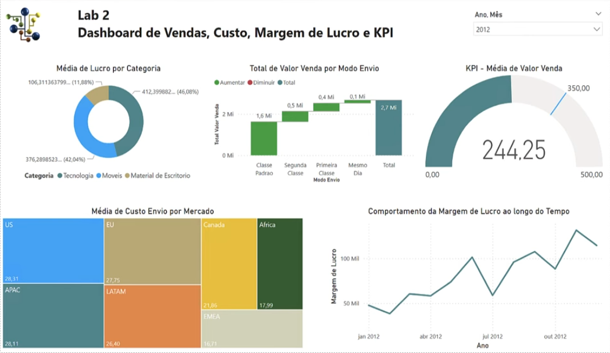

Projeto desenvolvido no curso Microsoft Power BI para Business Intelligence e Data Science da Data Science Academy. Este dashboard apresenta indicadores de vendas, custo, margem de lucro e KPIs estratégicos para análise de desempenho empresarial.
O painel foi elaborado com foco em clareza visual e interatividade, permitindo que usuários explorem dados essenciais para a tomada de decisões. Técnicas avançadas de DAX foram utilizadas para criar métricas personalizadas e visualizações dinâmicas.
← Voltar ao portfólio